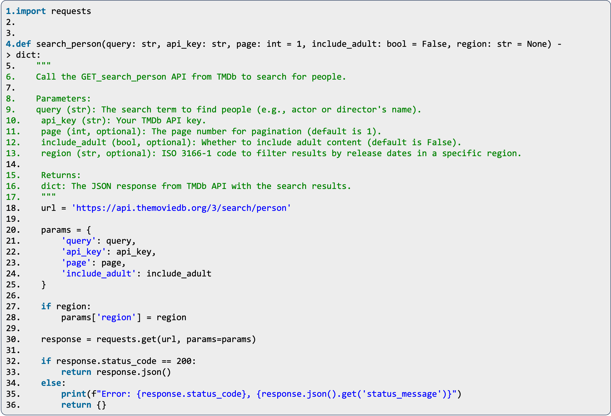

To integrate LLMs with tools, most previous work represents diverse tool-calling actions as special tokens, integrate these tokens into the text generation process of LLMs, and guide LLMs by specific tool-use workflows. However, these methods usually suffer from two challenges in realistic scenarios. First, it requires intensive expertise to effectively parse tool documentation and create examples to cover diverse usage, struggling to scale to large toolsets in practical applications. Consequently, LLMs show diminished performance when in-context examples are incomplete or missing, which potentially limits the scope of available tools to LLMs. Second, it is ad-hoc to manually define the tool-use workflow (e.g., step-by-step procedure and tool-calling format) for LLM, showing limited generalization to diverse tool specifications and restricting their flexibility in integrating multiple tools dynamically in a once tool-calling action.
Comparison between conventional tool-use flow (a) and the proposed framework (b).
In this work, we enquiry: Can we empower LLMs to automate tool-use flow and effectively manipulate diverse tools?
To achieve this, we propose a novel framework named AutoTools, which diverges from previous work by enabling LLMs as agents to automate tool-use workflow. AutoTools consists of two stages: (1) Tool Encapsulation and (2) Tool Programming.
Different from the handcrafted and ad-hoc tool-use workflow, the proposed AutoTools consists of two main steps:
An overview of the proposed framework AutoTools, in which the LLM (1) automatically encapsulates diverse tools into unified callable functions and (2) directly utilizes these functions through programming.
We further investigate how to improve the LLM's expertise within AutoTools, especially for LLMs with fewer parameters. We propose AutoTools-learning, a multi-task learning approach that trains the LLM as an automated tool agent from synthetic datasets. We design three core learning tasks: (1) documentation understanding, where the LLM is trained to parse diverse tool documentation and generate structured functions; (2) relevance learning, where the LLM learns to select relevant tools based on a query and a candidate tool list; and (3) function learning, where we optimize the LLM to call in-context functions and solve practical queries. To enable this learning process, we filter and synthesize training data from large-scale public resources for each task, transforming it into a unified format. This enables us to collect high-quality examples without intensive human annotation.
We evaluated the proposed AutoTools on ToolBench, RestBench and a newly-collected benchmark, i.e., AutoTools-Eval.
GIven the documentation of the "SEARCH_TOOL" APIs (tool) in natural language, the LLM can understand and encapsulate it into a structured function.
@inproceedings{autotools,
title = {Tool Learning in the Wild: Empowering Language Models as Automatic Tool Agents},
author = {Zhengliang Shi, Shen Gao, Lingyong Yan, Yue Feng, Xiuyi Chen, Zhumin Chen, Dawei Yin, Suzan Verberne, Zhaochun Ren},
year = 2025,
booktitle = {WWW}
}